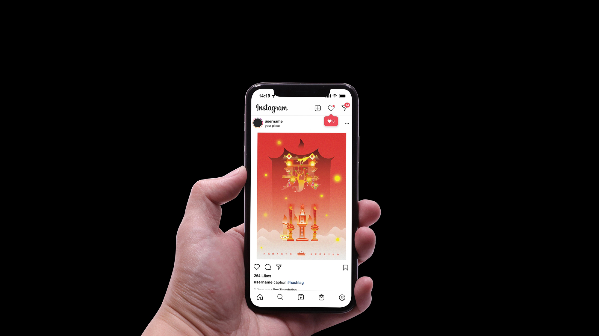
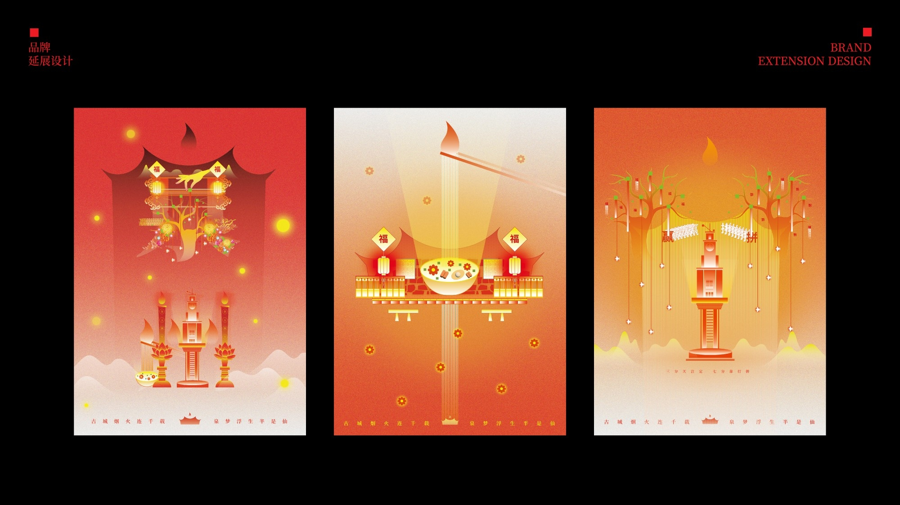
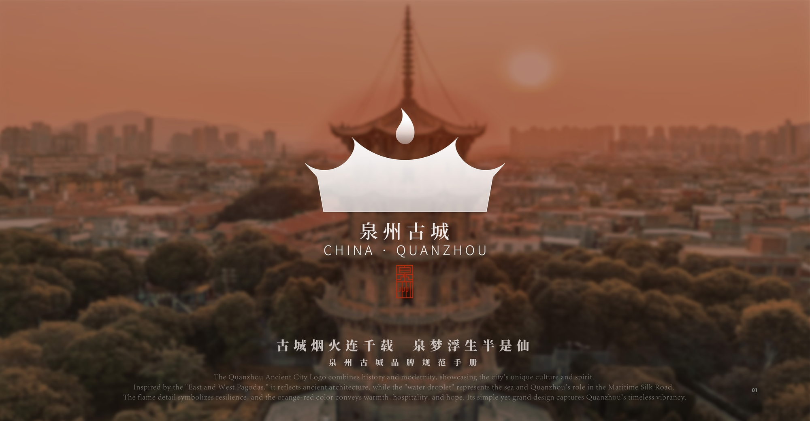
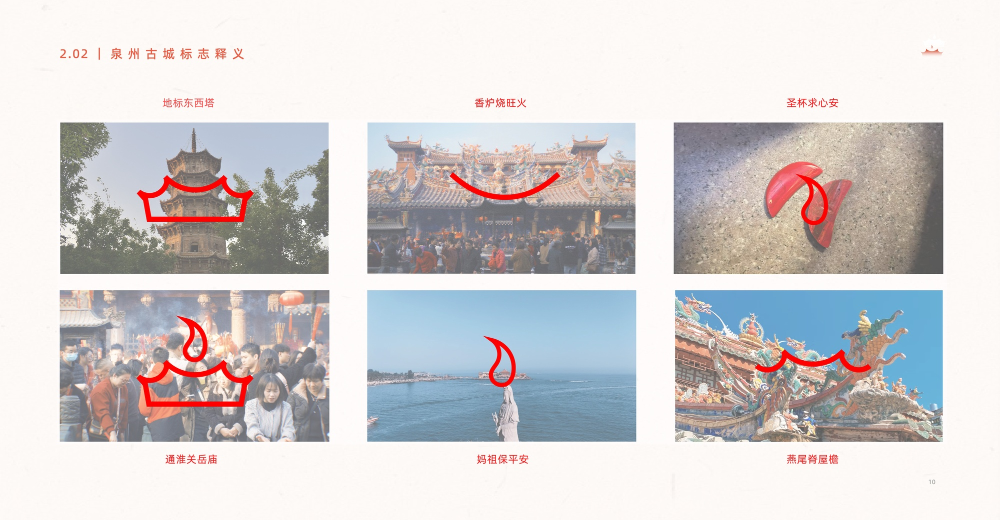
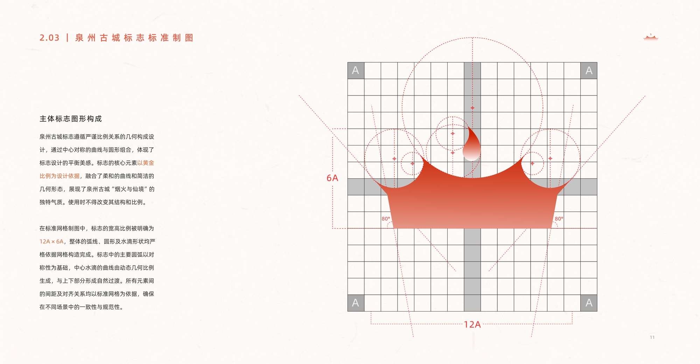
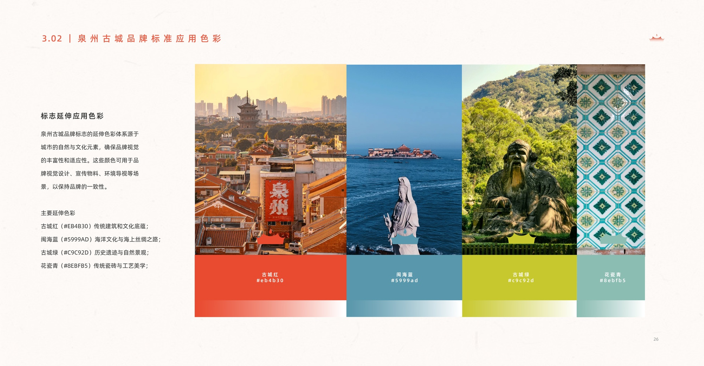
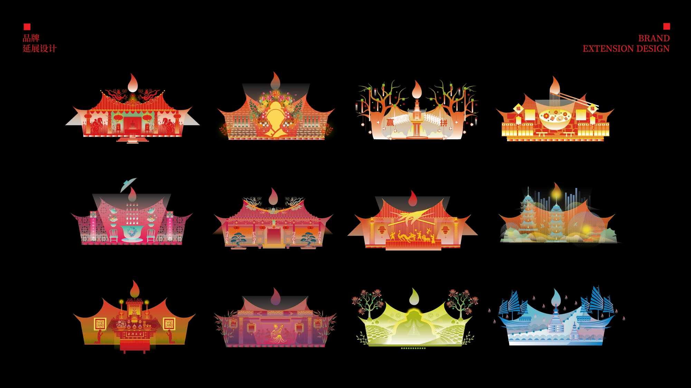
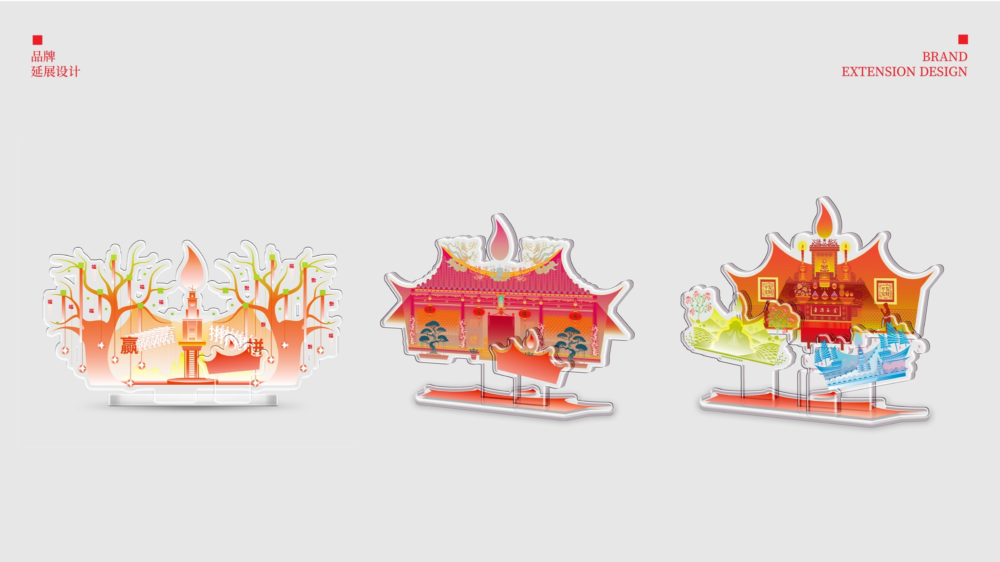
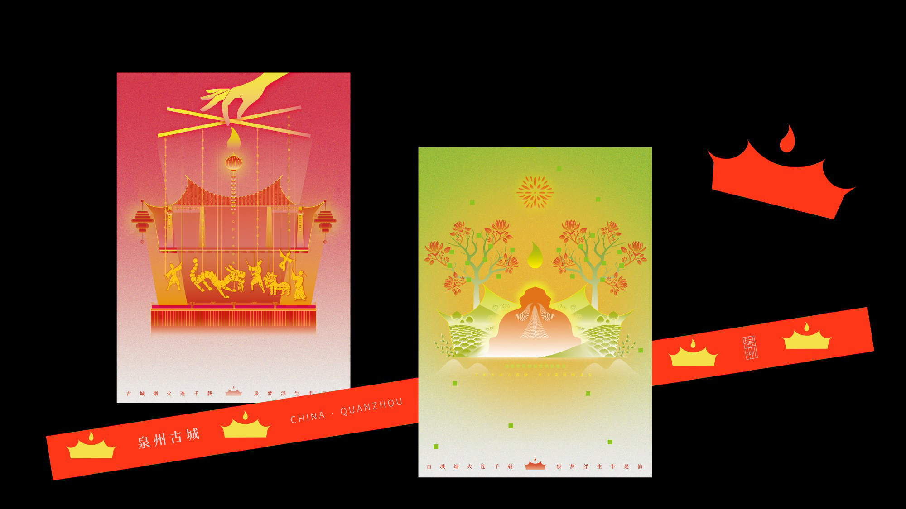

Urban Brand Image Design: Quanzhou Ancient City (2025)

"A thousand years of smoke and fire, dreams floating half like immortals."
Quanzhou Ancient City is like a timeless scroll, unfolding in mist and poetry. Stone alleys, ancient towers,
and drifting incense recall the Silk Road's rich past. Here, history and daily life blend in every brick and breeze.
Quanzhou feels both warmly human and quietly ethereal. Its culture lives on through modern design, where tradition meets creativity.
Time flows gently—sometimes still, sometimes vivid—offering each visitor a glimpse into a dreamlike world.
A city of stories, leaving behind a wisp of smoke and a verse, half real, half dream.

泉州古城，
如一卷千年的画轴，在烟火与诗意中缓缓展开。
“古城烟火连千载，泉梦浮生半是仙。”以文字为桥，将人带回那石板巷道间的时光秘境。
这里，巷巷纵横，古塔巍峨，香火缭绕间交织着海上丝路的繁华过往；这里，烟火袅袅，水波激涌，千年的时光与当下的生机融为一体。
泉州，是一场流淌于岁月长河的梦，既有人间烟火的温暖，又有仙境般味的悠远。
在泉州的每一片青瓦上，都书写着历史的厚重；在每一缕微风中，都氤氲着古城的低吟。
品牌形象以文化为骨，诗意为魂，将古城的质朴与灵动镌刻于现代设计之中。
这里的岁月是静止的，仿佛巷口触摸宋元的辉煌；这里的岁月是流动的，散发着当下生活的鲜活气息。
泉州古城，承载了千年的故事，也为每一个踏入其中的心灵，铺展出梦的边界，
留下一抹半是烟火、半是仙的诗篇。

City Brand Design
The Quanzhou city logo is highly adaptable, serving not only as a framework for the overall brand image but also integrating a narrative expression of the brand philosophy and a comprehensive visual identity system for the city. The design draws inspiration from the "ancient city itself," blending historical depth with modern aesthetics. Its main form is based on the iconic East and West Pagodas, highlighting the architectural beauty of Quanzhou's heritage. The upper "spirit flame" element combines symbols of smoke, water droplets, and the Holy Grail—representing the city's vibrant daily life, religious culture, maritime connection, and historical role in the Silk Road, while also reflecting the local spirit of perseverance captured in the phrase "Those who strive will succeed." The overall design is clean and elegant, with strong flexibility, making it suitable for a wide range of applications and fully capturing Quanzhou's character as an ancient yet vibrant city.

Logo Standard Drawing
The Quanzhou Ancient City logo is designed with strict adherence to geometric proportions, based on the golden ratio. It combines smooth curves with simple geometric forms to convey the city's unique character of "mortal life and fairyland." The structure of the logo must not be altered. Its overall layout is built on symmetry and a standardized grid system, with a width-to-height ratio of 12A × 6A, ensuring consistency and standardization across different applications.


Logo Standard Color
The standard color of the Quanzhou Ancient City brand logo is "Citong Red," symbolizing the depth of historical and cultural heritage while enhancing the brand's visual identity and emotional expression. The color specifications are as follows: HEX value is EC4B30, CMYK is C0 M88 Y87 K0, RGB is R236 G75 B48, and the PANTONE code is 179 U/C. This color is widely applied in the brand logo, visual communications, and related design materials to ensure consistency and recognizability of the brand image.
A total of 12 auxiliary graphic elements were developed based on the brand's standard color system, providing strong visual flexibility. These graphics are applied across various formats, including print posters, light shows, and digital brand applications.


Brand Extension Design
Based on the overall brand framework, a systematic design expansion was developed using the logo as the core element. This includes practical applications such as acrylic signage and office supplies, enhancing both the consistency and functionality of the brand's visual identity.

Digital Application: Centered around the IP image of "Zan'er Hua Niang" — the flower-adorned women of Xunpu Village in Quanzhou — a culturally rich and regionally distinctive digital visual system was created. This design has been applied to Quanzhou's nighttime light shows, enhancing the brand's cultural identity and delivering an immersive experience.
Light Show Design
In the light show design, the author used Touch Designer to create dynamic effects, projecting onto the historic walls of Quanzhou Ancient City and integrating brand auxiliary graphics to create an immersive visual experience. This approach breaks away from traditional static displays, blending history with modern design to enhance the city's brand communication and present a unique image of a "living ancient city."
Extended Design
Using digital tools, Blender and Touch Designer, the IP character "Zan'er" was modeled with high precision, integrating traditional cultural symbols, colors, and textures to create a highly recognizable and emotionally expressive figure. Based on this character, a series of cultural and creative products such as stickers and sachets were developed, maintaining visual consistency and enhancing brand identity and approachability. A companion character, the koi fish, features a simple and charming design, making it suitable for blind boxes, figurines, and other derivative products. Together, these designs expand the Quanzhou Ancient City brand's presence in everyday life and cultural communication.
Sincere thanks to Associate Professor Dong Hongyu for her invaluable guidance on the project.
All content is original. Unauthorized reproduction and plagiarism in any form are strictly prohibited.
所有内容均为原创，禁止未经授权搬运，禁止任何形式的抄袭。